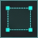
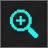
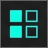
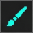
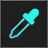

Names and tags are yours — the captured state name stays as it was. Tags are for finding frames later; a filter that uses them is coming.
Groups store pattern hashes (+ world/layer), not screen positions — so every draw of those tiles on this frame is included (copies too). Overlap with existing groups is shown above. BG groups store a default anchorHash from the frontmost selected tile for VIP overlay / macro placement.
anchorHash
Only sprite (OBJ) tiles on the current eye are captured. Positions are stored relative to the anchor (the frontmost selected tile whose pattern appears only once in the pose), so the pose can be found wherever the sprite moves. Change the anchor later from the inspector.
The copy cannot use the same pool row as the original. Criteria and other fields are cloned; pick the capture / memory variant this duplicate should attach to.
Nothing is removed from this project and the other pack is only read. Nothing is saved until you Save, so you can look first.
Frames a pose was captured from, or with a reference picture, stay. Paint is never touched, and auto-capture still counts what removed frames showed as captured. Nothing is saved until you Save.
Starting…
A colour owned by a group only applies where that group's criteria match, so the same pattern can differ per layer. An anchored overlay is painted by position rather than by pattern, so it has one row for the whole group. A colour in the shared pack applies to every copy of that pattern on every frame; when no group's criteria name it, nothing in the group panel can clear it — use Clear here. Ctrl+Z undoes a clear; save the pack to keep it.
No pack loaded.